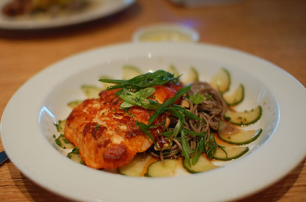

Awesome Haus Brewery
Home
Our beers
About us
Recipe of the week
Recipe of the week: Miso Salmon
Courtesy of Foo Kitchens
Prep time: 15 min
Cooking time: 15 min
Serves 5

Ingredients:
Amount
Ingredient
2 Tablespoons
Yellow miso paste
2 teaspoons
Soy sauce
2 Tablespoons
Lemon juice
1 Tablespoon
Mirin
1
Salmon filet, skin removed
1/2 cup
Green onion, chopped
Preparation:
Create the glaze by whisking together the miso paste, brown sugar, soy sauce, lemon juice, and Mirin.
Place the salmon filet on a roasting pan and coat the top with the glaze.
Broil the filet for 10-15 minutes or until the filet is just cooked through. Do
not
overcook.
Remove the filet from the broiler and top with the green onions.
Serve with rice and stir-fried veggies.